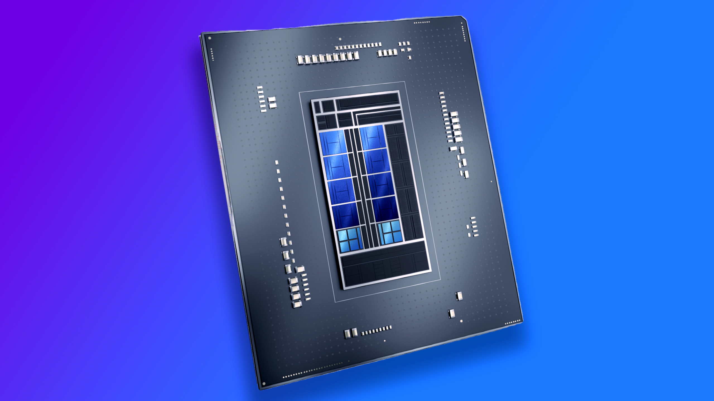
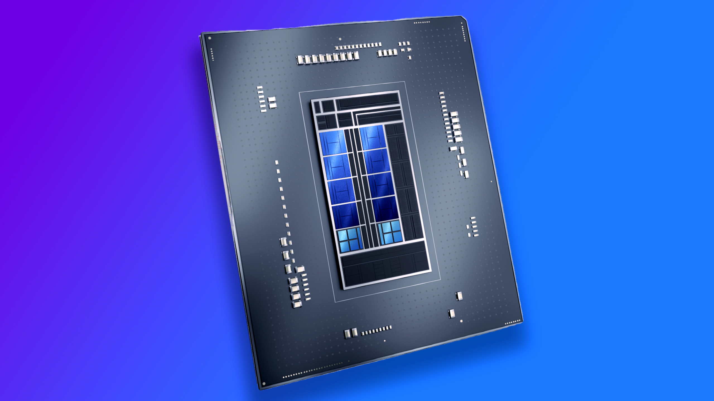

Hallo,
Selamat Membaca
Have a Nice Day !

Intel menyelenggarakan Architecture Day 2021 di dunia beberapa waktu lalu. Pada acara virtual tersebut Intel membagikan berbagai informasi mengenai arsitektur aneka produk yang akan dihadirkannya di pasar dunia dalam waktu yang tidak lama lagi. Salah satu produk yang dibagikan Intel informasinya adalah prosesor untuk consumer atau biasa disebut klien, yakni yang memiliki codename Alder Lake. Alder Lake adalah prosesor Intel generasi berikutnya untuk consumer. Prosesor Intel terkini untuk consumer, baik mobile maupun desktop, adalah Intel Core Generasi ke-11; tepatnya dengan codename Intel Tiger Lake untuk mobile dan Intel Rocket Lake untuk desktop. Dengan informasi resmi baru itu, gambaran mengenai Intel Alder Lake yang kemungkinan memiliki nama formal Intel Core Generasi ke-12, kini makin jelas.
“Untuk memenuhi permintaan 1.000x pada tahun 2025 ini, kami akan perlu untuk setidaknya mencapai peningkatan sesuai Hukum Moore [Moore's Law], 4x atau sejenisnya, pada masing-masing dari area teknologi ini; proses, packaging, memori, dan interkoneksi, dan arsitektur. Arsitektur adalah alkimia yang membawa mereka semua menjadi satu dengan peranti lunak, dan secara bersama mereka memberikan kami faktor pengali. Alhasil, semua peningkatan 4x tersebut bisa bergabung untuk memberikan kami 1.000x yang kami perlukan untuk beban kerja yang menuntut,” ujar Raja Koduri (Chief Architect, Intel) menegaskan pentingnya arsitektur dalam memenuhi permintaan konsumen untuk mengakselerasi beban kerja mereka sebesar seribu kali pada tahun 2025.
 

Berbeda dengan generasi sebelumnya, Intel Alder Lake menggunakan arsitektur CPU hibrida. Hibrida yang dimaksud di sini menyerupai Intel Core processors with Intel Hybrid Technology atau yang lebih dikenal dengan codename Intel Lakefield, yakni mengandung core CPU dengan dua arsitektur berbeda; seperti yang InfoKomputer sampaikan di sini. Salah satu arsitektur adalah untuk kinerja dan arsitektur satunya lagi adalah untuk efisiensi. Pada Intel Core Generasi ke-11 dan generasi sebelumnya, arsitektur yang digunakan adalah satu. Model hibrida tersebut juga menyerupai yang lazim digunakan SoC untuk smartphone sejak beberapa lama.
Intel Alder Lake mengandung core CPU dengan arsitektur ber-codename Intel Golden Cove dan core CPU dengan arsitektur ber-codename Intel Gracemont. Intel Golden Cove adalah yang untuk kinerja, sedangkan Intel Gracemont adalah yang untuk efisiensi. Menemani Intel Golden Cove dan Intel Gracemont adalah Intel Thread Director. Intel Thread Director ini berfungsi untuk membantu sistem operasi menempatkan suatu beban kerja atau thread pada core yang paling optimal sesuai dengan kondisi saat itu. “Anda akan mendengar mengenai salah satu pergeseran terbesar pada arsitektur x86 dalam kurun lebih dari satu dekade,” sebut Raja Koduri mengenai bergesernya Intel ke arsitektur hibrida seperti pada Intel Alder Lake.
Seperti telah disebutkan, Intel Alder Lake adalah prosesor Intel generasi berikutnya untuk consumer. Berbeda dengan saat ini yang terpecah, Intel Alder Lake ditujukan untuk mobile dan desktop. Secara spesifik, Intel menyebutkan Alder Lake ditujukan untuk segmen ultra mobile, mobile, dan desktop. Oleh karena itu TDP yang dimiliki Intel Alder Lake adalah dari 9 W sampai 125 W. Tentunya setiap segmen memiliki rentang TDP yang berbeda.
Pada sisi CPU, Intel Alder Lake, seperti yang telah dibahas, menggunakan kombinasi core dengan arsitektur ber-codename Intel Golden Cove alias core performa dan core dengan arsitektur ber-codename Intel Gracemont alias core efisiensi. Begitu pula dengan Intel Thread Director. Varian tertinggi dari Intel Alder Lake mengandung delapan core performa dan delapan core efisiensi. Berhubung core performa mendukung Intel Hyper-Threading dan core efisiensi tidak, jumlah total thread yang didukung adalah 24. Adapun untuk jumlah total cache L2-nya adalah 10 MB untuk core performa dan sewajarnya 8 MB untuk core efisiensi. Sementara, jumlah total cache L3-nya adalah 30 MB dan dibagi pakai dengan GPU.
Varian tertinggi Intel Alder Lake tentunya merupakan prosesor desktop. Varian tertinggi untuk mobile dan ultra mobile, CPU-nya mengandung lebih sedikit core. Menilik gambar yang ditampilkan Intel, varian tertinggi untuk mobile mengandung enam core performa dan delapan core efisiensi, sedangkan varian tertinggi untuk ultra mobile mengandung dua core performa dan delapan core efisiensi. Sementara, untuk bagian lain, Intel Alder Lake menggunakan GPU yang beraksitektur Xe-LP; mendukung memori utama sampai DDR5-4800, DDR4-3200, LPDDR5-5200, dan LPDDR4X-4266; mendukung sampai PCI-Express 5 x16; menyertakan Intel GNA 3.0; dan yang untuk mobile dan ultra mobile mendukung Thunderbolt 4. Jumlah EU GPU-nya sendiri bervariasi, Varian tertinggi Intel Alder Lake yang merupakan prosesor desktop mengandung 32 EU. Namun, yang untuk mobile dan ultra mobile mengandung sampai 96 EU.
Sumber : infokomputer.grid.id